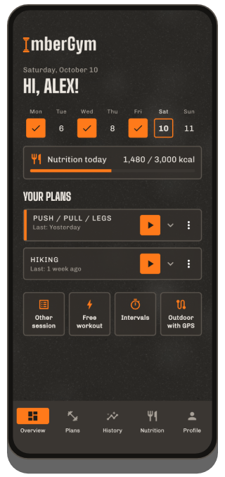
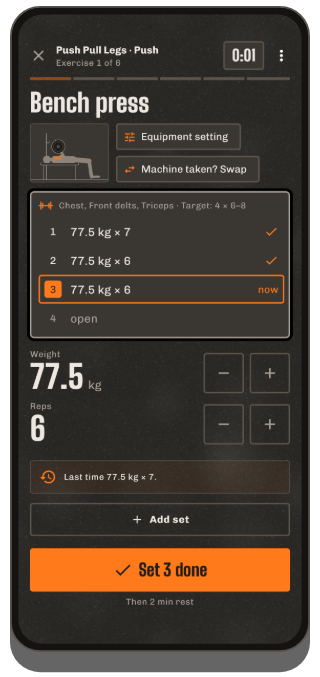
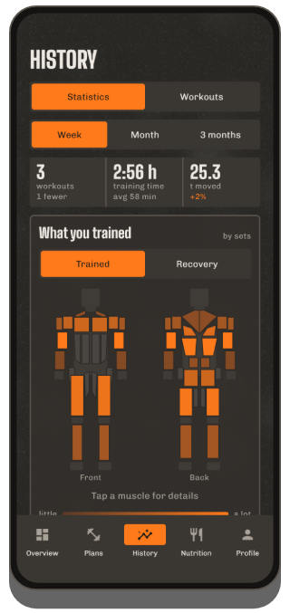
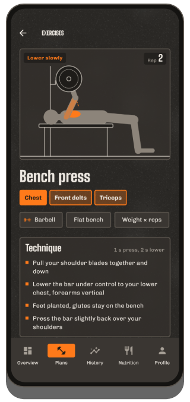
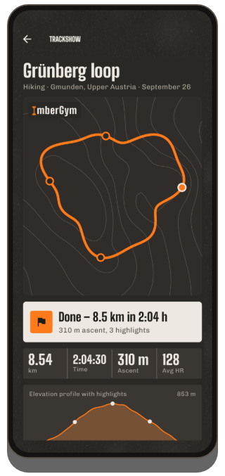
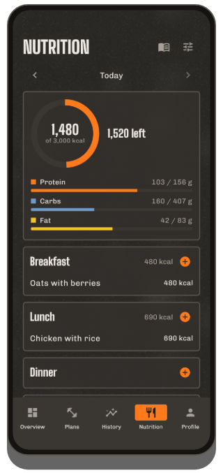

Train.
Track.
Get better.
ImberGym is your workout log for the gym, home and outdoors: plans, animated exercises, records and statistics – plus GPS tours with Trackshow, nutrition and supplements. No account, no cloud: your data stays on your phone.
Email me at chr.mathai@gmail.com with your Google account address – I'll add you and send you the test link.
Everything is free during the beta – testers get ImberGym Lifetime as a gift at launch.

What ImberGym does
Plans & templates
Your own plans with sessions, sets, reps and rest – or ready-made templates from beginner full body to push/pull/legs, calisthenics and yoga. Live duration estimate per session.
Share plans via QR code
The whole plan fits into a QR code – your training partner scans it and has it right away. No server, no account.
Active workout
One exercise per page, last values prefilled, progression hints, supersets, remembered machine settings. Rest timer even on the lock screen – can be turned off.
Animated exercises
Each of the 206 exercises shows its movement as a figure with the muscles involved, tempo and technique tips.
Records
Max weight, estimated 1RM, volume, reps, distance and pace – “New record!” right after the set.
Statistics & body map
Week, month or 3 months with change, distribution by muscle group, body map with recovery, progress per exercise and weekly & yearly reviews to share.
Heart rate from watch & strap
ImberGym gets your watch's heart rate for every workout via Health Connect. With a Bluetooth chest strap it's live during your workout – with heart rate zones and heart-rate-based rest.
Several gyms
Add the places you train – ImberGym recognises where you are when you start and shows the gym in your history and calendar.
Body
Weight and body fat with 7-day average – also straight from your scale via Health Connect. Progress photos with an overlay for the same pose and before/after comparison; photos stay inside the app.
Nutrition
1,200+ foods offline, logged with one tap. Barcode scanner (Open Food Facts), recipes with portion calculator, calorie goal optionally dynamic based on your activity. Can be switched off completely.
Supplements
Your own products with usual amount, “Taken” button, calendar and reminders on the weekdays you choose – without dosage suggestions.
Calendar, backup & import
Workouts in your device calendar if you like. Backup file for switching phones, import from Strong and Hevy, CSV export.
What ImberGym looks like





Out and about
GPS recording
Running, cycling, hiking: distance, pace or speed and elevation via barometer. Keeps running with the screen off, pauses at traffic lights and resumes on its own after a break.
Trackshow
Your tour as a camera flight over contour lines with highlights like steepest section, highest point and fastest kilometer – to share as a story image or video.
GPX export
Every recording can be exported as a GPX file and opened in other apps.
Free & Premium
Free
- Full workouts with rest timer
- Up to 5 own plans and 5 own exercises, all templates
- Exercise database with animations
- History, records, statistics, weekly & yearly review
- Heart rate from your watch via Health Connect
- Calorie tracker with food catalogue and barcode, weight
- Pass on plans via QR code
Premium
- Unlimited plans and own exercises, import plans via QR code
- Body map, recovery, body fat & weight history
- Outdoor with GPS, Trackshow as video
- Live chest strap, heart rate zones, heart-rate-based rest
- Gyms, supplements, progress photos
- All recipes, dynamic calorie goal
€1.99 per month, €14.99 per year or a one-time €24.99 (Lifetime) via Google Play – try it free for 7 days after your first workout.
FAQ
Do I need an account?
No. ImberGym works without sign-up and without its own server.
Where is my data stored?
Only on your phone. There is no cloud, no advertising and no analytics. Details in the privacy policy.
Does the app work offline?
Yes. Only two things use the internet: looking up an unknown barcode at Open Food Facts and the place name of a GPS tour (the starting point is sent to Android's location service for this). Everything else works offline.
How does my watch's heart rate get into ImberGym?
Via Health Connect, Android's health data store. In your watch app, turn on Health Connect and allow “Heart rate” – Samsung Health, Garmin Connect, Fitbit, Polar Flow, Withings and Zepp (Amazfit) among others can do this. Then tap “Load heart rate from watch” in the workout details in ImberGym. Huawei: Huawei Health does not write to Health Connect; the “Health Sync” app (Play Store) can transfer the data – source Huawei Health, target Health Connect, select “Heart rate”. Tip: start a workout on your watch too so it measures continuously.
Which chest straps work?
Any Bluetooth chest strap with the standard heart rate profile, e.g. Polar H9/H10, Garmin HRM-Dual or Wahoo TICKR. Pair it once in the profile under “Heart rate strap & zones” – after that it connects on its own whenever you train.
How do I share a plan?
In the plan editor, tap the QR icon and show the code or send it as an image. The other person scans it in the “Plans” tab with “Scan plan” – also from an image. The whole plan is inside the code, nothing is uploaded.
I'm switching phones – what happens to my data?
In the profile under “Data & backup”, create a backup and save it e.g. to Google Drive. On the new phone, choose “New phone? Restore a backup” right on the first screen.
I'm coming from Strong or Hevy – can I bring my workouts?
Yes. Import the CSV export of your old app under “Data & backup” → “Import workouts”. ImberGym matches the exercises and shows a preview first.
Are my progress photos uploaded?
No. They are kept in a private app folder, don’t appear in the gallery and are even excluded from Android backups.
Can I hide nutrition?
Yes. The whole section can be switched off in the profile – ImberGym is then a pure workout log.
How do I delete my data?
Single entries directly in the app, everything at once by uninstalling the app.